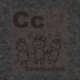
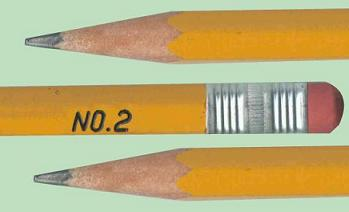

It's me! The guy who never writes because it's just passe or something like that. Yah, so I'm not dead, just not writing in my Blog :-)
Seriously though, if you noticed from summers past, I don't Blog that often when the sun is out and I'm out making money (or in this case, spending it). Don't take it personally, interesting things do still happen, you just don't know about them. For example, I'm working at Dial America. It's not as bad as you think. I basically sit and enter credit card applications until midnight. Last night, they kept coming and coming, I hope it's not like that tonight. It's kind of nice being out of a straight service position. No pesky customers walking around. Quite a difference.
Some upsetting things have been going on (one in particular on Sunday). Besides that, everything seems to be slipping away at a steady pace. I feel like it's still the first week after school, but it's already June! Wow. In one month, I'll be sitting on the lawn at Piedmont Park with Genevieve watching Heidi, checking out the lesbians, and maybe for once successfully infiltrating Backstreet. Like I want to go anyways.
If I haven't mentioned, I'm going to see John Lynch next weekend and I'm going to the MADONNA CONCERT! Oh, I can think of about a million other gay people that are just livid at the thought of a so-so Madonna listener like myself being there to witness all the Material Girl's classics. Well, you're just going to have to deal with it. I get to go to the Supreme Court too. I think I'll ask Scalia for a marriage license...see if he gets itchy.

Last day I work! (before Saturday) Horray!
Just one thing...I'm sorry, but I think Pat Robinson is just the most evil man in the world. I look at him and I see an ugly, hateful person that certainly has his coming. Anyone who presumes to speak to God is out of their mind. Uh, you don't care about this. Just a random thought.
Uh, nothing going on right now. I'm off tomorrow, not sure what I'll be doing. I've been sleeping alot and going to bed really late. I woke up at 1 today. It's nice getting so much sleep, but I should be doing some more exercise. One of these days, I'll run down to Blockbuster or something.
There are some car related things going down. The engine light came on on Monday, and this caused some stress. Turns out it was the GAS CAP! It cost me $50 for them to replace the gas cap and for them to do a diagnostic on the on-board computer to find out exactly what the light was detecting. Oh, yah, and I also waited there for 3+ hours. NOT fun. Though I burned a CD for the occasion...I called it "Dealership." I love burning CDs at will. It's very nice listening to music in the car. Charlie even fashioned the stereo to up the base and make the sound better...so now I'm that annoying guy with the loud bass going down the street! Horray!
I've been lazy, so expect a Making Fiends juiced up entry soon. Sadly, not as good as the last episode. Likely only one more left :-(
Yup, it's that time of several months again! A new Making Fiends! Oh Amy, how I love watching your fiendishly delicious webtoons on these random mornings. They are such a comfort...you do such a good job.
This time around, though, I didn't enjoy the episode as much as the birthday one. Too much time in the classroom. Seems like all of the other cartoons cut at some point, this one just kept going on and on. It's written very well. Mrs. Minty is very odd in her exclamations to the children...
Mrs. Minty: Now Vendetta tong, my butter cake, please sit down.
Vendetta: I will not sit down! And I am not a cake! With butter, or jam! Or ducks! |
Yup yup, so hope you enjoy, I certainly did, to a nominal extent. I'm off today! It's a good thing, I woke up with snipits of the Bank of America credit card script in my head. I'd really prefer to keep boring uninteresting things like that at work, where they belong!
Speaking of work, I won the raffle last night. They have this raffle that everytime you get a balance transfer on a credit card, you get a raffle ticket. Every hour they pull out a ticket, and if you win, you get to get off the phones for an hour, taking raffle tickets from all the other people who are taking calls. At first, I thought it was really annoying...I'm so busy talking to the people, I could really give a crap about writting my name on a little ticket. Last night, I thought it might be interesting to get off the phone. It was...odd, I mean, I'm just in limbo standing there with my little kettle of tickets and a purple pumkin full of candy. I was not very lucky, sadly. By the time I got control of the candy, all the chocolate was gone! And this selfish hispanic lady grabbed the last Butterfinger. Don't lay a finger on my Butterfinger...bitch!
And that's another thing! You get candy for every balance transfer. I'm sorry, but isn't that kind of cruel? I'm munching on a Snickers and all of a sudden I hear in my earphone "Bank of America, Phase" and all of a sudden I am chocking on nuts, saying, "Thank you for calling about the Bank of America credit card, my name is...*gasp* *choke*!" Dead.
It doesn't make any sense...especially when they give me Blow Pops. Yah, some nitwit chewing gum is supposed to handle your $5,000 plus balance transfer. Makes alot of sense, huh?
Well, I think I'll primp up for Friday night hijinks. If you have a chance, say a prayer for Marilia's mother. She was diagnosed with breast cancer yesterday, and though she has a real shot and she's very lucky they found it so soon, she still deserves your attention and prayer. She's a beautiful woman, and I know she can pull through this.
Other then that...later my petite eclairs!
